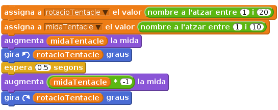

Llista de tasques
Per generar un moviment dels tentacles, podeu rotar-los i canviar-los la mida utilitzant un bloc
aleatoriamb valors baixos, i llavors esperar un període curt de temps abans de tornar-los a la forma original.
(Tingueu en compte que estem multiplicant per -1 per tenir els valors negatius de midaTentacle)